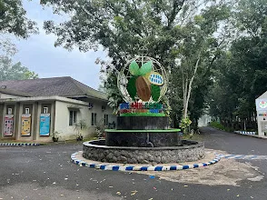

Pusat Penelitian Kopi dan Kakao Indonesia (Puslitkoka) Jember adalah lembaga riset perkebunan nasional yang berperan mengembangkan varietas unggul, teknologi budidaya, dan inovasi produk kopi serta kakao sejak 1911.

Kantor pusat Puslitkoka Jember yang telah beroperasi selama lebih dari satu abad.
Sumber: https://lh3.googleusercontent.com/gps-cs-s/APNQkAHeUFRzsrgPlDXDWpBHGYLGQQJWLuArglmQVjGbtvI7duYRyjTRxbC1qIbFeG8KPJR6OrP6-AonHdIBunFU4XHGvAVqJjwclQqVOHWWmHjr7wkCCgDSovnp2ak9cburEnRiyGY=s1360-w1360-h1020-rwBayangkan kamu minum kopi pagi ini, entah robusta pahit yang tegas atau arabika dengan sedikit rasa buah. Pernahkah terlintas, siapa yang berdiri di balik kualitas cita rasa itu? Petaninya sudah pasti. Tapi ada satu lembaga yang sering luput dari sorotan, padahal perannya luar biasa: Pusat Penelitian Kopi dan Kakao Indonesia (Puslitkoka) Jember. Lembaga ini bukan sekadar warisan kolonial yang berdebu; ini adalah institusi hidup yang terus relevan dalam menjaga daya saing produk perkebunan Indonesia di pasar global.
Sejarah Singkat yang Tidak Singkat Dampaknya
Puslitkoka berdiri pada 1 Januari 1911 dengan nama Besoekisch Proefstation. Sejak 1981, lembaga ini resmi menjadi pusat penelitian nasional di bawah PT Riset Perkebunan Nusantara (RPN). Mengelola lahan seluas 160 hektar di Rambipuji, Puslitkoka telah diakui secara internasional sebagai Indonesian Coffee and Cocoa Research Institute (ICCRI) dan ditetapkan sebagai Pusat Unggulan IPTEK (Center of Excellence).
Fokus Riset: Dari Hulu ke Hilir
Ruang lingkup kerja Puslitkoka mencakup seluruh rantai nilai komoditas. Berikut adalah pilar utamanya:
- Varietas Unggul: Menciptakan bibit yang tahan hama, lebih produktif, dan adaptif terhadap perubahan iklim.
- Teknologi Pascapanen: Mengembangkan mesin pengolahan kopi dan kakao yang aksesibel bagi petani lokal tanpa bergantung pada teknologi impor.
- Produk Hilir: Inovasi produk seperti cokelat Vicco yang menggunakan cocoa butter murni, hasil riset langsung dari laboratorium mereka.
"Setiap cangkir kopi yang kamu nikmati pagi ini, ada sumbangsih diam-diam dari Puslitkoka di dalamnya. Dan itu bukan hal kecil."
Puslitkoka Membantu Petani Secara Langsung
Riset tidak akan berarti tanpa implementasi di lapangan. Puslitkoka menjalankan berbagai program nyata:
Pendampingan Teknologi: Peneliti turun langsung ke sentra perkebunan untuk mengajarkan teknik budidaya dan manajemen hama yang tepat.
Program Pelatihan: Membuka kelas uji citarasa kopi (cupping), pelatihan mutu kakao, hingga teknik pengolahan produk hilir bagi wirausahawan baru.
Wisata Edukasi untuk Masyarakat Umum
Kini, Puslitkoka juga menjadi destinasi wisata favorit di Jember. Dengan tiket masuk hanya Rp 3.000, pengunjung bisa menjelajahi area perkebunan. Tersedia pula fasilitas kereta kayu (biaya tambahan Rp 10.000) yang membawa pengunjung berkeliling pabrik pengolahan sambil mendapatkan penjelasan edukatif dari pemandu.
FAQ Seputar Puslitkoka
1. Apakah terbuka untuk kunjungan sekolah?
Ya, Puslitkoka sangat terbuka untuk rombongan pelajar dan mahasiswa sebagai sarana belajar pertanian praktis.
2. Apa saja jenis kopi yang dikembangkan?
Puslitkoka mengembangkan varietas Arabika, Robusta, dan Liberika yang telah diseleksi unggul.
3. Di mana lokasi kebun percobaannya?
Selain lahan utama di Jember, terdapat kebun percobaan di Bondowoso dan Malang.
4. Apa itu cokelat Vicco?
Cokelat premium buatan Puslitkoka dengan kandungan cocoa butter murni, tersedia di outlet resmi mereka.
5. Bagaimana cara mengikuti pelatihan?
Informasi pelatihan reguler dapat diakses melalui situs resmi ICCRI atau datang langsung ke bagian administrasi Puslitkoka.
Sumber: beritajatim.com, sidita.disbudpar.jatimprov.go.id, detik.com, dan ICCRI.